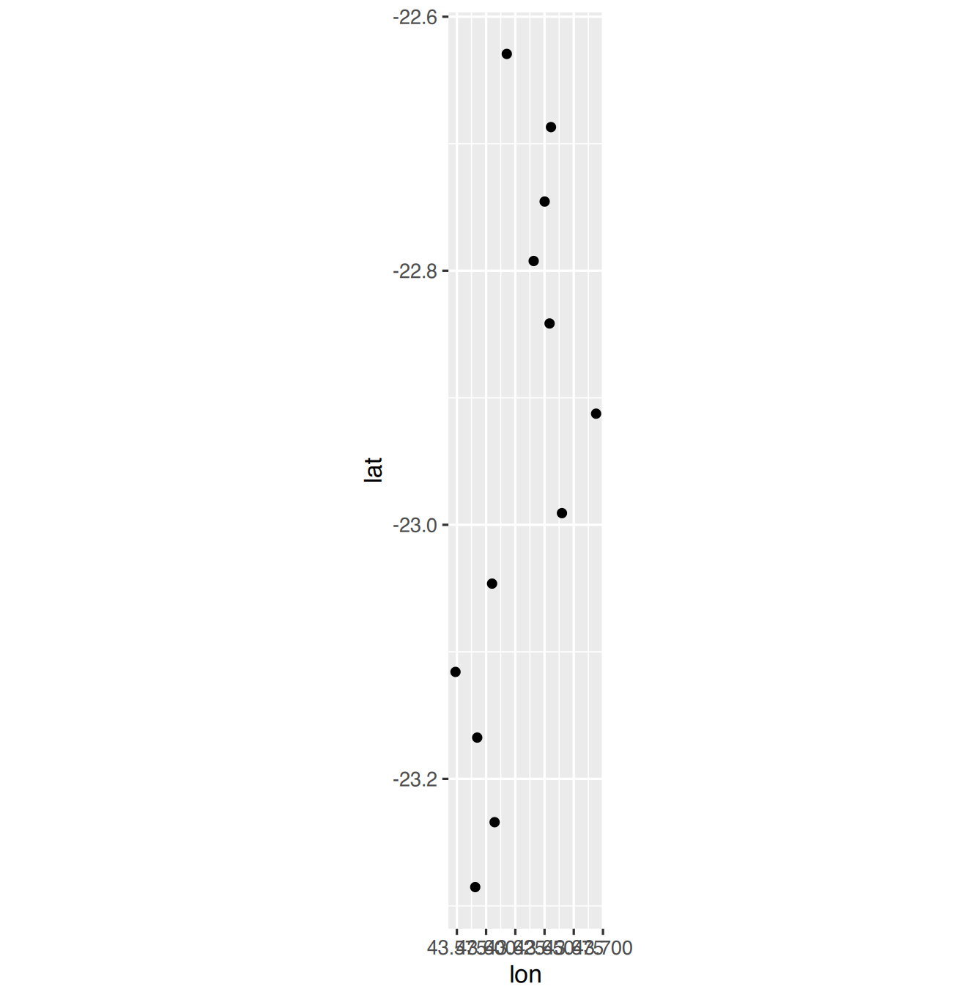
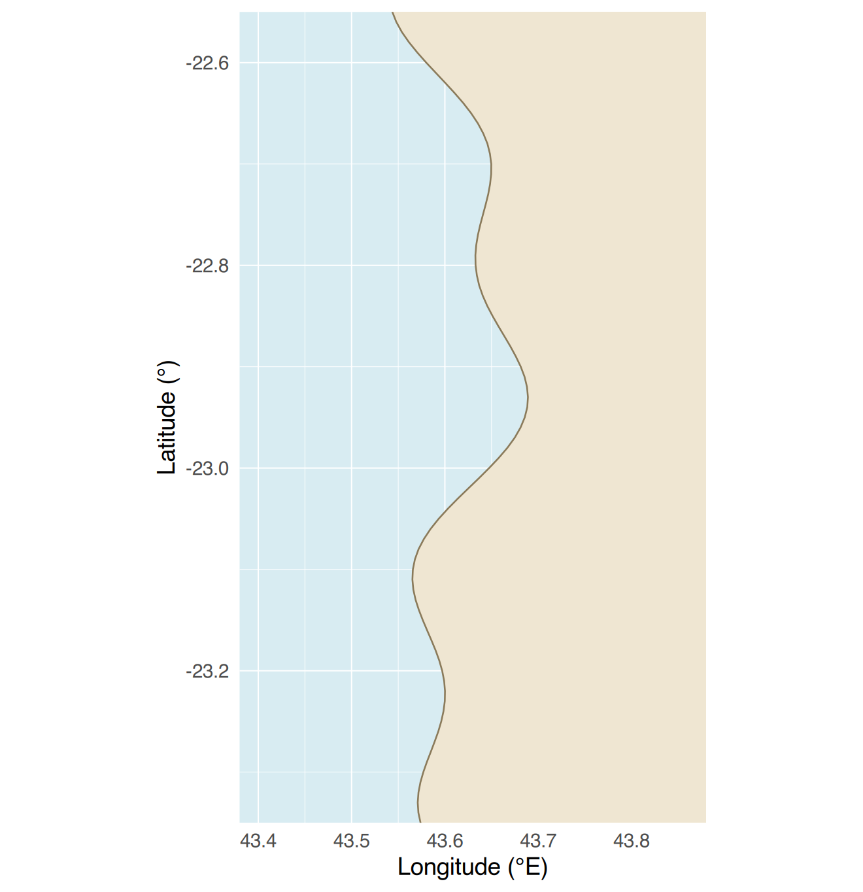
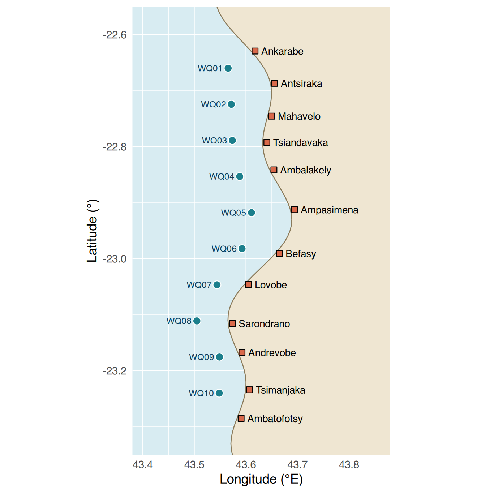
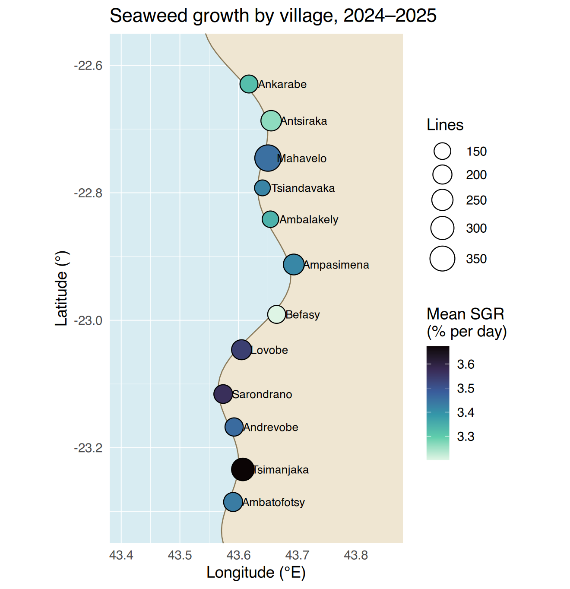
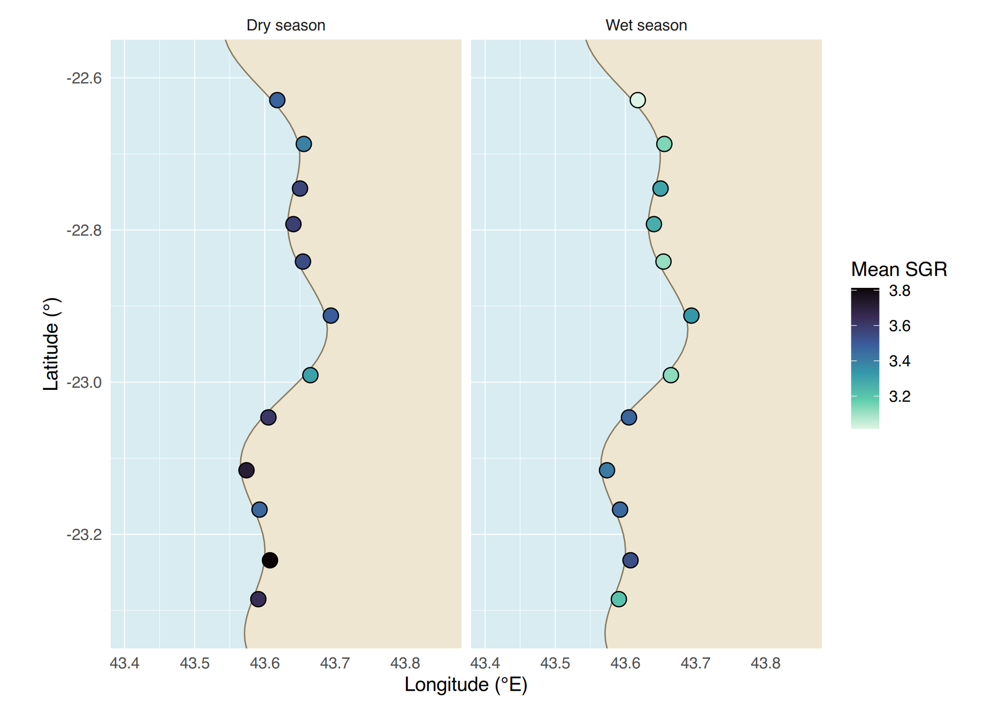
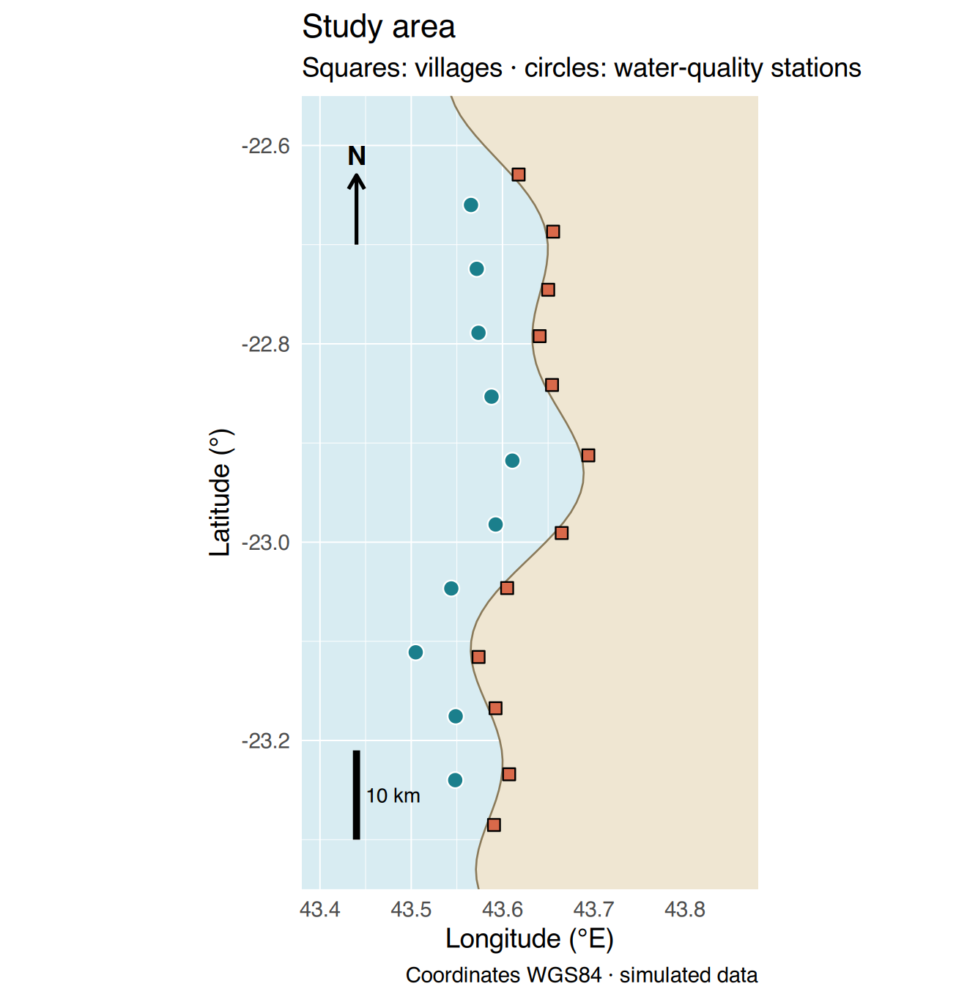
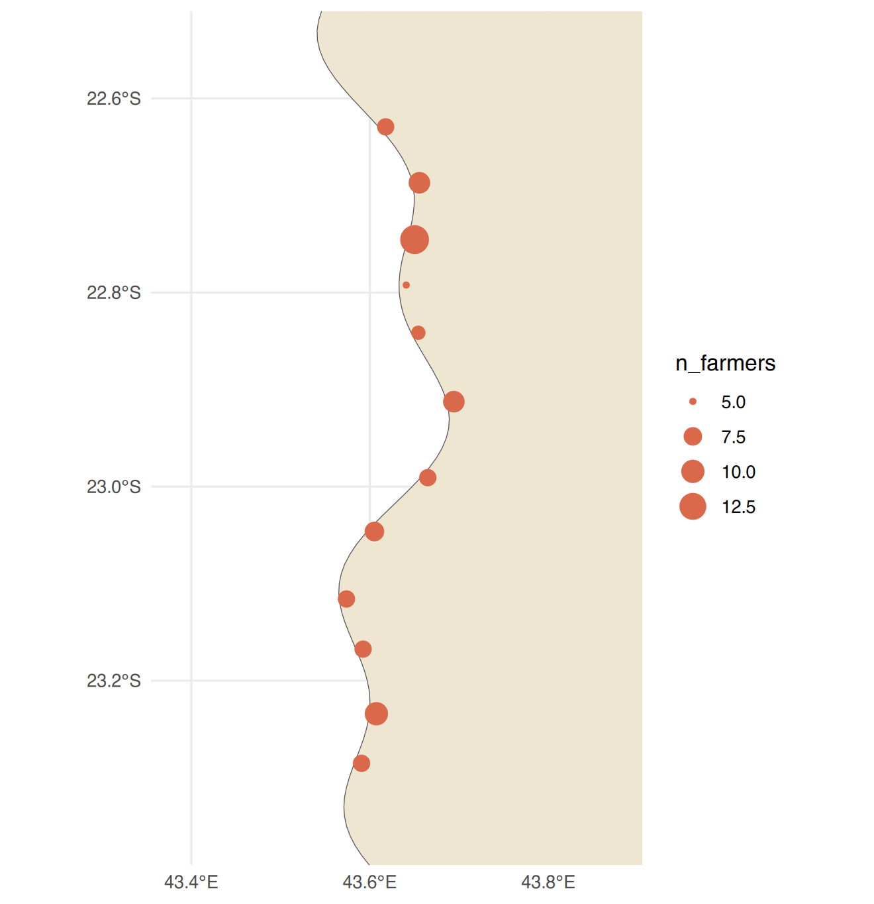

coord_quickmap());coord_quickmap()) ;Data of this session (simulated). Three small coordinate tables, all in WGS84 longitude/latitude (decimal degrees, the system of a handheld GPS and of Google Maps):
coastline.csv — the shoreline was
digitised by the NGO technician by clicking points
along the coast on a free satellite image (93 points), then closed
towards the east to form the land polygon. Type:
ordered vertices of a polygon.villages.csv — position of the landing beach of each of
the 12 villages (handheld GPS), its zone and the number of cooperative
farmers. Type: points + attributes.stations.csv — position (GPS on the boat) and depth
(weighted rope) of the 10 water-quality stations. Type: points +
attributes.The coastline is invented: it represents no real place. In this region the land is to the east and the sea to the west.
Données de cette séance (simulées). Trois petites tables de coordonnées, toutes en longitude/latitude WGS84 (degrés décimaux, le système d’un GPS de poche et de Google Maps) :
coastline.csv — le trait de côte a été
numérisé par le technicien de l’ONG en cliquant des
points le long de la côte sur une image satellite gratuite (93 points),
puis fermé vers l’est pour former le polygone de terre.
Type : sommets ordonnés d’un polygone.villages.csv — position de la plage de débarquement de
chacun des 12 villages (GPS de poche), sa zone et le nombre de
cultivateurs de la coopérative. Type : points + attributs.stations.csv — position (GPS sur le bateau) et
profondeur (corde lestée) des 10 stations de qualité de l’eau. Type :
points + attributs.Le trait de côte est inventé : il ne représente aucun lieu réel. Dans cette région la terre est à l’est et la mer à l’ouest.
⇩ coastline.csv ⇩ villages.csv ⇩ stations.csv
Longitude is the x (east–west) coordinate and
latitude the y (north–south) coordinate. South of the
equator, latitudes are negative: −23.2 is further south
than −22.6. So a first map is just geom_point():
La longitude est la coordonnée x (est–ouest) et la
latitude la coordonnée y (nord–sud). Au sud de
l’équateur, les latitudes sont négatives : −23,2 est
plus au sud que −22,6. Une première carte est donc simplement
geom_point() :
villages <- read.csv("data/villages.csv")
stations <- read.csv("data/stations.csv")
coast <- read.csv("data/coastline.csv")
ggplot(villages, aes(x = lon, y = lat)) +
geom_point() +
coord_quickmap() # correct aspect ratio for the latitude (see below)
Why coord_quickmap()? One degree of
latitude is always ≈ 111 km, but one degree of longitude shrinks towards
the poles (≈ 111 × cos(latitude) km: about 102 km here at 23° S).
Without a map coordinate system, ggplot stretches the axes to fill the
figure and the shapes are distorted. coord_quickmap() sets
the right ratio; coord_sf() (with the sf package, below)
uses a true map projection.
Pourquoi coord_quickmap() ? Un degré de
latitude vaut toujours ≈ 111 km, mais un degré de longitude rétrécit
vers les pôles (≈ 111 × cos(latitude) km : environ 102 km ici à 23° S).
Sans système de coordonnées cartographique, ggplot étire les axes pour
remplir la figure et les formes sont déformées.
coord_quickmap() fixe le bon rapport ;
coord_sf() (avec le package sf, plus bas) utilise une vraie
projection cartographique.
geom_polygon() joins the points in the order of
the rows and fills the inside: the coastline file must stay in
its original order (never arrange() it!). Each layer can
have its own data: put data = and
aes() inside the geom_*(). Layers are drawn in
the order you write them: land first, then points on top.
geom_polygon() relie les points dans l’ordre des
lignes et remplit l’intérieur : le fichier de côte doit rester
dans son ordre d’origine (ne jamais le trier avec arrange()
!). Chaque couche peut avoir ses propres données :
mettez data = et aes() dans le
geom_*(). Les couches sont dessinées dans l’ordre où vous
les écrivez : la terre d’abord, puis les points par-dessus.
base_map <- ggplot() +
geom_polygon(data = coast, aes(lon, lat), fill = "#efe6d2", colour = "#8a7a5a", linewidth = 0.4) +
coord_quickmap(xlim = c(43.38, 43.88), ylim = c(-23.35, -22.55), expand = FALSE) + # zoom on the study area
labs(x = "Longitude (°E)", y = "Latitude (°)") +
theme_minimal(base_size = 12) +
theme(panel.background = element_rect(fill = "#d8ecf2", colour = NA), # the sea
panel.grid = element_line(colour = "white", linewidth = 0.3))
base_map # a ggplot object can be stored and reused (Session I8)
base_map +
geom_point(data = stations, aes(lon, lat), shape = 21, fill = "#1b7f8c", colour = "white", size = 3) +
geom_point(data = villages, aes(lon, lat), shape = 22, fill = "#d9694a", colour = "black", size = 2.5) +
geom_text(data = villages, aes(lon, lat, label = village), hjust = 0, nudge_x = 0.012, size = 3.2) +
geom_text(data = stations, aes(lon, lat, label = station), hjust = 1, nudge_x = -0.01,
size = 2.8, colour = "#0b3d5c")
hjust = 0 aligns the start of the text
on the point (text to the right), hjust = 1 its
end (text to the left); nudge_x moves it a
little. When labels overlap, the package ggrepel
(geom_text_repel()) moves them automatically — optional:
install.packages("ggrepel").
hjust = 0 aligne le début du texte sur
le point (texte à droite), hjust = 1 sa
fin (texte à gauche) ; nudge_x le décale
un peu. Quand les étiquettes se chevauchent, le package
ggrepel (geom_text_repel()) les déplace
automatiquement — optionnel :
install.packages("ggrepel").
base R
A thematic map shows a value at each place. The
recipe always has the same three steps: summarise per
place (Sessions I3, I6) → join to the coordinates by
the shared key → map the value to size, colour
or fill.
Une carte thématique montre une valeur en chaque
lieu. La recette a toujours les trois mêmes étapes :
résumer par lieu (séances I3, I6) →
joindre aux coordonnées par la clé commune → associer
la valeur à size, colour ou
fill.
growth <- seaweed %>%
group_by(village) %>%
summarise(mean_sgr = mean(sgr, na.rm = TRUE), n_lines = n(), .groups = "drop")
growth_map <- left_join(villages, growth, by = "village") # key: village
head(growth_map)#> village zone lat lon n_farmers mean_sgr n_lines
#> 1 Ankarabe North -22.6293 43.6177 7 3.322352 176
#> 2 Antsiraka North -22.6869 43.6555 9 3.264693 231
#> 3 Mahavelo North -22.7455 43.6501 14 3.452877 394
#> 4 Tsiandavaka North -22.7923 43.6407 5 3.420310 135
#> 5 Ambalakely Centre -22.8415 43.6543 6 3.342884 147
#> 6 Ampasimena Centre -22.9125 43.6941 9 3.415613 240base_map +
geom_point(data = growth_map, aes(lon, lat, size = n_lines, fill = mean_sgr),
shape = 21, colour = "black") +
geom_text(data = growth_map, aes(lon, lat, label = village), hjust = 0, nudge_x = 0.015, size = 3) +
scale_fill_viridis_c(option = "mako", direction = -1, name = "Mean SGR\n(% per day)") + # colour-blind safe
scale_size_area(max_size = 9, name = "Lines") +
labs(title = "Seaweed growth by village, 2024–2025")
Good map habits. Use size for a
quantity (number of lines, of farmers) and
colour/fill for an intensity (mean, rate).
Use scale_size_area() so that the area of
the circle is proportional to the value. Choose a
sequential colour scale (viridis) for a value that goes
from low to high, and keep the legend title explicit with its unit.
Bonnes habitudes. Utilisez size pour
une quantité (nombre de lignes, de cultivateurs) et
colour/fill pour une intensité (moyenne,
taux). Utilisez scale_size_area() pour que la
surface du cercle soit proportionnelle à la valeur.
Choisissez une échelle de couleurs séquentielle
(viridis) pour une valeur qui va de faible à élevée, et gardez un titre
de légende explicite avec son unité.
growth_season <- seaweed %>%
group_by(village, season) %>%
summarise(mean_sgr = mean(sgr, na.rm = TRUE), .groups = "drop") %>%
left_join(villages, by = "village")
base_map +
geom_point(data = growth_season, aes(lon, lat, fill = mean_sgr), shape = 21, size = 4) +
scale_fill_viridis_c(option = "mako", direction = -1, name = "Mean SGR") +
facet_wrap(~ season, labeller = labeller(season = c(dry = "Dry season", wet = "Wet season")))
The same colour scale is shared by both panels, so the colours can be compared directly: growth is higher everywhere in the dry season (Session I10).
La même échelle de couleurs est partagée par les deux panneaux, donc les couleurs se comparent directement : la croissance est plus forte partout en saison sèche (séance I10).
Without a GIS package we can draw them with annotate().
For the scale: 0.1° of latitude ≈ 11.1 km everywhere,
so a vertical bar of 0.09° is 10 km. (A horizontal bar
would need the cos(latitude) correction.)
Sans package SIG, on peut les dessiner avec annotate().
Pour l’échelle : 0,1° de latitude ≈ 11,1 km partout,
donc une barre verticale de 0,09° fait 10 km. (Une
barre horizontale demanderait la correction cos(latitude).)
final_map <- base_map +
geom_point(data = stations, aes(lon, lat), shape = 21, fill = "#1b7f8c", colour = "white", size = 3) +
geom_point(data = villages, aes(lon, lat), shape = 22, fill = "#d9694a", size = 2.5) +
# north arrow
annotate("segment", x = 43.44, xend = 43.44, y = -22.70, yend = -22.63,
arrow = arrow(length = unit(0.25, "cm")), linewidth = 0.8) +
annotate("text", x = 43.44, y = -22.61, label = "N", fontface = "bold") +
# vertical scale bar of 10 km (0.09 degree of latitude)
annotate("segment", x = 43.44, xend = 43.44, y = -23.30, yend = -23.21, linewidth = 1.5) +
annotate("text", x = 43.45, y = -23.255, label = "10 km", hjust = 0, size = 3.2) +
labs(title = "Study area", subtitle = "Squares: villages · circles: water-quality stations",
caption = "Coordinates WGS84 · simulated data")
final_map
Try it. Map the 10 stations coloured by their
mean turbidity (turbidity_NTU, from the
clean water-quality data) with a size proportional to their depth. Which
zone is the most turbid?
À vous. Cartographiez les 10 stations colorées par
leur turbidité moyenne (turbidity_NTU,
données de qualité d’eau nettoyées) avec une taille proportionnelle à
leur profondeur. Quelle zone est la plus turbide ?
Real projects use GIS files (shapefiles, GeoPackages) and
projections. The sf package stores the
geometry in a special column of a data frame, so that dplyr verbs still
work, and geom_sf() + coord_sf() draw it with
a real map projection. You will use it (with terra and tmap) at the
Advanced level; here is just a taste. Optional:
install.packages("sf").
Les vrais projets utilisent des fichiers SIG (shapefiles,
GeoPackages) et des projections. Le package
sf stocke la géométrie dans une colonne spéciale d’un
data frame, si bien que les verbes dplyr fonctionnent toujours, et
geom_sf() + coord_sf() la dessinent avec une
vraie projection. Vous l’utiliserez (avec terra et tmap) au niveau
avancé ; voici juste un avant-goût. Optionnel :
install.packages("sf").
library(sf)
villages_sf <- st_as_sf(villages, coords = c("lon", "lat"), crs = 4326) # 4326 = code of WGS84
land_sf <- st_sfc(st_polygon(list(as.matrix(rbind(coast, coast[1, ])))), crs = 4326) # closed ring
villages_sf # a data frame with a "geometry" column#> Simple feature collection with 12 features and 3 fields
#> Geometry type: POINT
#> Dimension: XY
#> Bounding box: xmin: 43.5738 ymin: -23.2852 xmax: 43.6941 ymax: -22.6293
#> Geodetic CRS: WGS 84
#> First 10 features:
#> village zone n_farmers geometry
#> 1 Ankarabe North 7 POINT (43.6177 -22.6293)
#> 2 Antsiraka North 9 POINT (43.6555 -22.6869)
#> 3 Mahavelo North 14 POINT (43.6501 -22.7455)
#> 4 Tsiandavaka North 5 POINT (43.6407 -22.7923)
#> 5 Ambalakely Centre 6 POINT (43.6543 -22.8415)
#> 6 Ampasimena Centre 9 POINT (43.6941 -22.9125)
#> 7 Befasy Centre 7 POINT (43.6649 -22.9908)
#> 8 Lovobe Centre 8 POINT (43.6051 -23.0463)
#> 9 Sarondrano South 7 POINT (43.5738 -23.1158)
#> 10 Andrevobe South 7 POINT (43.5924 -23.1675)ggplot() +
geom_sf(data = land_sf, fill = "#efe6d2") +
geom_sf(data = villages_sf, aes(size = n_farmers), colour = "#d9694a") +
coord_sf(xlim = c(43.38, 43.88), ylim = c(-23.35, -22.55)) +
scale_x_continuous(breaks = c(43.4, 43.6, 43.8)) +
theme_minimal()
Script scripts/i11_maps.R.
n_farmers.
Total number of farmers in the South zone?villages.csv and map
it. Which village has the highest mean SGR, and what is its value (3
decimals)?Script scripts/i11_maps.R.
n_farmers. Nombre total de cultivateurs dans la zone
Sud ?villages.csv et
cartographiez-le. Quel village a le SGR moyen le plus élevé, et quelle
est sa valeur (3 décimales) ?Question 3:
wq %>% group_by(station) %>% summarise(turb = mean(turbidity_NTU, na.rm = TRUE)),
then left_join() with stations by
"station".
Question 3 :
wq %>% group_by(station) %>% summarise(turb = mean(turbidity_NTU, na.rm = TRUE)),
puis left_join() avec stations par
"station".
library(ggplot2); library(dplyr)
villages <- read.csv("data/villages.csv"); stations <- read.csv("data/stations.csv")
coast <- read.csv("data/coastline.csv")
seaweed <- read.csv("data/checkpoints/I3_seaweed_analysis.csv")
wq <- read.csv("data/checkpoints/I2_water_quality_clean.csv")
base_map <- ggplot() + geom_polygon(data = coast, aes(lon, lat), fill = "#efe6d2") +
coord_quickmap(xlim = c(43.38, 43.88), ylim = c(-23.35, -22.55)) + theme_minimal()
# 1
base_map + geom_point(data = villages, aes(lon, lat, size = n_farmers))
sum(villages$n_farmers[villages$zone == "South"])
# 2
growth <- seaweed %>% group_by(village) %>% summarise(mean_sgr = mean(sgr, na.rm = TRUE))
gm <- left_join(villages, growth, by = "village")
gm[which.max(gm$mean_sgr), c("village", "mean_sgr")]
p2 <- base_map + geom_point(data = gm, aes(lon, lat, fill = mean_sgr), shape = 21, size = 4) +
scale_fill_viridis_c(name = "Mean SGR")
# 3
turb <- wq %>% group_by(station) %>% summarise(turb = mean(turbidity_NTU, na.rm = TRUE)) %>%
left_join(stations, by = "station")
turb[which.max(turb$turb), ]
base_map + geom_point(data = turb, aes(lon, lat, colour = turb, size = depth_m))
# 4
round((max(villages$lat) - min(villages$lat)) * 111)
# 5
p5 <- p2 +
annotate("segment", x = 43.44, xend = 43.44, y = -22.70, yend = -22.63, arrow = arrow()) +
annotate("text", x = 43.44, y = -22.61, label = "N") +
annotate("segment", x = 43.44, xend = 43.44, y = -23.30, yend = -23.21, linewidth = 1.5) +
annotate("text", x = 43.45, y = -23.255, label = "10 km", hjust = 0) +
labs(title = "Mean seaweed growth by village", caption = "WGS84 · simulated data")
ggsave("outputs/map_sgr.png", p5, width = 14, height = 16, units = "cm", dpi = 300)